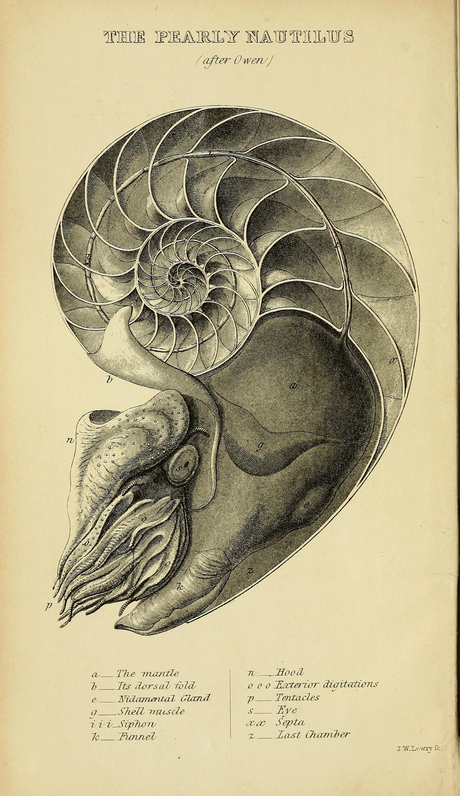

Farver
Udledt fra nautilus-illustrationen, bladdårernes mørkegrønne og havets turkis
Anbefalede kombinationer
Typografi
Cormorant Garamond til display · Crimson Pro til brødtekst · Courier New til data
"Videnskab handler om at forstå naturens mønstre — fra nautilussens logaritmiske spiral til havstrømmenes globale kredsløb."
— smbi.dk · Undervisningsmateriale
Phosphor Icons
Til naturgeografi, biologi og pædagogiske interfaces — ph ph-[navn]
Ikonstørrelser
Komponenter
Genbrugbare byggeklodser til smbi.dk
Knapper
Badges
Indholdskort
Interaktiv Budyko-model der viser sammenhængen mellem solindstråling, albedo og Jordens gennemsnitstemperatur. Baseret på energibalanceligningen.
Visuel animation af DNA-replikationsprocessen med helicase, polymerase og ligase. Trinvis forklaring til HF-niveau.
Simulation-kort (primært format)
Udforsk Jordens energibalance ved at justere albedo og drivhusgaseffekten.
Åbn simulationVisualiser den globale havvandscirkulation drevet af temperatur og saltindhold.
Åbn simulationInteraktivt flowdiagram over kulstoffets veje mellem atmosfære, hav og biota.
Åbn simulationFormular-elementer
Fotografi & Illustrationer
Dine uploadede billeder og deres anbefalede brug på smbi.dk


Brug-anbefalinger
Gør dette
- Brug nautilus-illustrationen let gennemsigtig som baggrundsmønster
- Overlay mørkt gradient over fotos for at sikre læsbar tekst
- Brug bladbilledet til at introducere biologiafsnit
- Luftfotoet fungerer som geografisk "atmosfære"
Undgå
- Stretch/crop nautilus-illustrationen ujævnt
- Brug DNA-billedet (hvid baggrund) direkte som baggrund — crop eller vignettér det
- For mange billeder på én side — ét stærkt billede er nok
Hero-sektion
Komplet eksempel på en hero-komponent til forsiden af smbi.dk
Interaktive simuleringer til din undervisning
Udforsk Jordens systemer — fra strålingbalancen til kulstofkredsløbet — med digitale simuleringer designet til gymnasieniveau.
Spacing System
Konsekvent rytme baseret på 0.25rem-trin
Border-radius
Anbefaling: brug border-radius: 2px som standard — det giver et snarpent, akademisk udtryk.